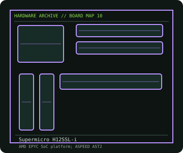

[ INDIVIDUAL COMPONENT // MOTHERBOARDS ]
Supermicro H12SSL-i
E-ATX SP3 board for qualified EPYC 7002/7003 CPUs, eight-channel DDR4 ECC and onboard IPMI management. This entry identifies one product model; revision and firmware qualifications are stated below.

IDENTIFICATION: Check the PCB silkscreen, printed revision, assembly code, and firmware identifier on the actual board. Similar model names and PCB revisions may use different specifications or firmware.
Specifications
| Catalog subcategory | Workstation and server boards |
|---|---|
| Exact board / model | Supermicro H12SSL-i |
| Era / platform | Single-socket AMD EPYC SP3 server/workstation board, 2019 |
| CPU and socket | One AMD EPYC 7002 or 7003-series SP3 processor where listed by Supermicro; 7003 support depends on board revision and BIOS |
| Chipset / controller | AMD EPYC SoC platform; ASPEED AST2500 BMC |
| Memory | Eight DDR4 ECC DIMM slots, eight-channel; supported RDIMM/LRDIMM type, capacity and speed depend on CPU and BIOS |
| Expansion and connectivity | E-ATX; three PCIe 4.0 expansion slots with x16/x16/x8 lane groups, eight SATA 6 Gb/s, one M.2, dual Gigabit Ethernet plus dedicated IPMI management LAN, VGA and USB |
| Firmware | Supermicro BIOS and BMC firmware are separate. Use the H12SSL-i revision-specific manual, firmware release notes, and CPU support matrix; do not cross-flash H12SSL-NT or H12SSL-C. |
Compatibility and revision notes
SP3 CPU generations and 7003 CPU support are BIOS/revision-sensitive. Populate memory in the manual's channel order; verify EPS12V power, chassis airflow over CPU/VRM and the correct BIOS before bringing up a high-TDP EPYC processor.
Physical socket fit alone does not establish compatibility. Verify the exact processor support list, minimum BIOS, memory population rules, case dimensions, power connectors and shared-lane behavior in the cited model documentation before installation.
Preservation and repair
Preserve the BMC MAC label and IPMI credentials/configuration before resetting. Inspect SP3 carrier/socket contacts, board standoffs and high-current VRM area; log BMC sensor readings and firmware versions. Use the board's recovery procedure rather than interrupting an update.
For an archive record, photograph the PCB and labels before cleaning; note serial/date codes, BIOS/BMC versions, accessories, known faults, repairs, and test conditions. Use ESD-safe handling and never apply power with loose conductive hardware beneath the board.
Sources & further reading
- Supermicro — H12SSL-i product specificationsManufacturer product page with platform, memory, slot, network and management details.
- Supermicro — H12SSL-i product resourcesManufacturer support resources, documentation and firmware.
Manufacturer model documentation is the primary reference; confirm the document revision and board markings when specifications vary by revision or SKU.